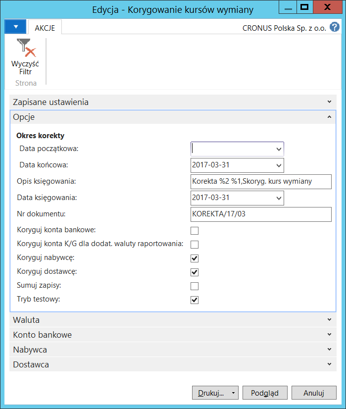
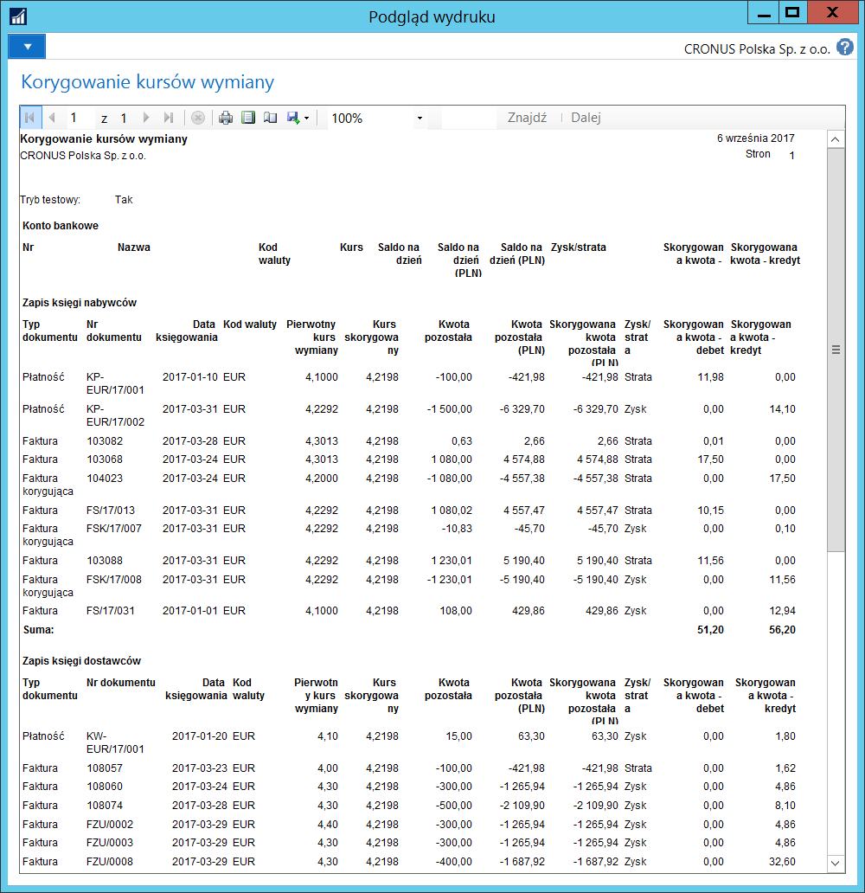

Korygowanie kursów wymiany
Informacje ogólne
Korygowanie kursów wymiany, czyli wycena bilansowa, to przeliczenie otwartych rozrachunków nabywców i dostawców oraz środków pieniężnych zgromadzonych w kasie i na rachunkach bankowych według kursu wymiany obowiązującego na dzień przeprowadzenia wyceny bilansowej. Wycena taka powinna być przeprowadzana co najmniej raz w roku. W ramach Polskiej Lokalizacji do standardowej funkcjonalności zostały dodane następujące ulepszenia:
Możliwość uruchomienia skryptu Korygowanie kursów wymiany oddzielnie dla nabywców, dostawców i kont bankowych.
Możliwość zaksięgowania zapisów szczegółowo lub zagregowanych według waluty, w wyniku uruchomienia skryptu Korygowanie kursów wymiany.
Możliwość uruchomienia skryptu Korygowanie kursów wymiany w trybie testowym, wyłącznie jako symulacji (czyli bez wykonywania wynikających z przeliczeń księgowań).
Obsługa
W celu uruchomienia skryptu Korygowanie kursów wymiany z wykorzystaniem ulepszeń Polskiej Lokalizacji, należy postępować według następujących kroków:
Należy wybrać Działy > Zarządzanie Finansami > Działania okresowe > Waluta > Koryguj kursy wymiany.
W oknie wstępnym skryptu należy we właściwy sposób wypełnić pola na karcie skróconej Opcje:
Data początkowa – w tym polu należy wprowadzić datę początkową okresu objętego korygowaniem kursów wymiany. Pozostawienie pola pustego oznacza, że skorygowane zostaną wszystkie zapisy z okresu przed Datą końcową włącznie.
Data końcowa – w tym polu należy wprowadzić datę końcową okresu objętego korygowaniem kursów wymiany. Pozostawienie pola pustego oznacza, że skorygowane zostaną wszystkie zapisy z okresu po Dacie początkowej włącznie.
Opis księgowania – opis, jaki zostanie przeniesiony do zapisów księgi głównej po wykonaniu skryptu. Pole wypełniane jest automatycznie przez system, w razie potrzeby można ręcznie zmienić jego zawartość.
Data księgowania – data, z jaką zostaną zaksięgowane zapisy w wyniku uruchomienia skryptu. Pole jest wypełniane automatycznie przez system Data końcową, w razie potrzeby, można ją ręcznie zmienić.
Nr dokumentu – w tym polu należy wprowadzić numer dokumentu, na podstawie którego zostaną zaksięgowane zapisy w wyniku uruchomienia skryptu.
Koryguj konta bankowe – pole należy zaznaczyć, jeśli podczas uruchomienia skryptu mają zostać skorygowane kwoty na kontach bankowych i kontach kas.
Koryguj nabywcę – pole należy zaznaczyć, jeśli podczas uruchomienia skryptu mają zostać skorygowane otwarte zapisy księgi nabywców.
Koryguj dostawcę – pole należy zaznaczyć, jeśli podczas uruchomienia skryptu mają zostać skorygowane otwarte zapisy księgi dostawców.
Koryguj konta K/G dla dodat. waluty raportowania – pole należy zaznaczyć, jeśli podczas uruchomienia skryptu mają zostać skorygowane kwoty na kontach K/G dla dodatkowej waluty raportowania.
Sumuj zapisy – pole należy zaznaczyć, jeśli zapisy księgowe będące wynikiem działania skryptu mają zostać zsumowane według waluty. Niezaznaczenie pola spowoduje utworzenie szczegółowych zapisów księgowych będących wynikiem działania skryptu.
Tryb testowy – pole należy zaznaczyć, jeśli skrypt ma zostać uruchomiony w trybie testowym, wyłącznie jako symulacja, bez księgowania. Niezaznaczenie tego pola spowoduje zaksięgowanie korekty kursów wymiany podczas wykonania skryptu.
Uwaga
Skrypt nie może być uruchomiony w Trybie testowym, gdy zaznaczone jest pole Sumuj zapisy.
W kartach skróconych: Waluta, Nabywca, Dostawca, Konto bankowe można w standardowy sposób ustawić filtry ograniczające zakres danych wybranych do skorygowania.

- Należy wybrać Drukuj w celu uruchomienia skryptu z jednoczesnym wydrukiem lub **Podgląd w **celu uruchomienia skryptu z jednoczesnym wyświetleniem na ekranie:
